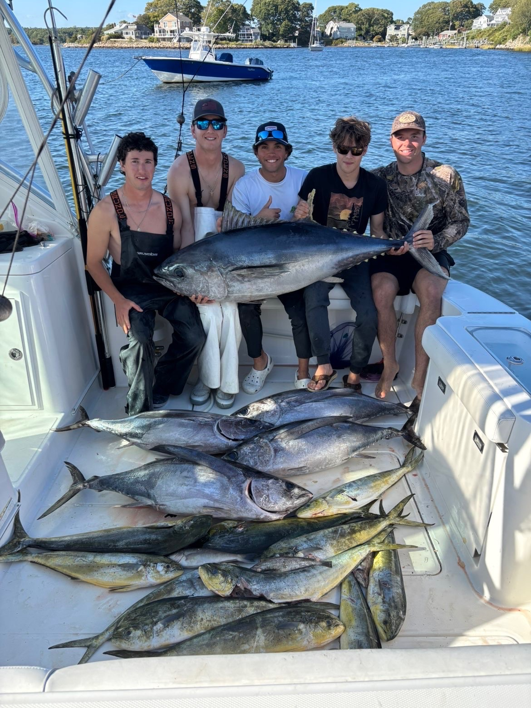

Offshore
Bluewater Canyon Runs
Long days offshore chasing yellowfin, bluefin and mahi. When the water turns blue, it's a beatdown — trolling spreads, jigging marks, and loading the box. For anglers who want the real deal.
- Target: Tuna · Mahi
- Length: [Full day / overnight]
- Best months: [Jul–Oct]
- From [$XXX] / [up to X anglers]